Home Lab Revamp
Dibuat di Surga
Aku memutuskan untuk merombak setup home-lab ku. Kenapa? Karena ada banyak conflict antara service yang berjalan. Aku mencoba memasang Pi-Hole untuk eksperimen DNS dan Ad-Blocker tapi ternyata itu conflict dengan Apache Web Server. Aku tidak mau mematikan Apache karena FreshRSS, Nextcloud berjalan di atas itu.
Alasan yang kedua adalah aku ingin melakukan ekspansi untuk storage. Thinkpad X260 serverku sekarang memiliki “hanya” 128 GB. Aku berencana untuk membuat SMB dan memindahkan banyak film dari PC-ku (sekitar 87.7 GB, 56 film) untuk ditonton dengan streaming via Jellyfin. Kenapa engga streaming pakai website biasa aja? Jawabannya karena ada risiko bakal patah-patah. Aku juga berencana melakukan banyak hal seperti mendownload otomatis film via torrent ke serverku jadi aku tidak perlu menyalakan PC-ku dan menunggu proses download selesai.
Post ini adalah bentuk dari dokumentasi dalam proses perombakan ini.
X260
Mari kenalan dulu sama lappy yang bakal kuoprek. Dia akan kuberi nama, “RENNER” yang artinya pelari (dari bahasa Jerman) dan nama itu bersifat palindrom (dibaca dibalik tetap RENNER). Dia adalah Thinkpad X260 yang kubeli 27 Desember 2021. Waktu itu aku ada di kampung halaman, cuma punya PC dan PC-ku ada di kota aku kuliah😢. Karena mati bosan aku memutuskan untuk membeli laptop yang “murah”. Berikut penampakan si doi.

Sejarah X260
Sedikit flashback, Aku kurang puas dengan layout keyboard Jepang-nya. Jadi aku beli lagi keyboard khusus untuk layout US, tapi karena aku terlalu tengil jadi keycap untuk backspace jadi lepas dan aku engga tahu cara benerinnya.

Setelah beberapa bulan beli, aku kembali kuliah dan laptop ini jadi tidak terpakai. Aku memutuskan untuk meminjamkannya ke sahabatku. Setelah dipakai beberapa semester, laptopnya rusak…keyboard-nya ngetik sendiri sama ada beberapa keys yang tidak berfungsi. Sudah tertekan tetapi dia tidak mau merespon. Sahabatku beli laptop baru dan kembaliin si RENNER.
Aku kira aku masih bisa pakai RENNER sebagai laptop (bisa dibawa ke warkop). Tapi setelah aku coba ganti keyboard ke Jepang lagi ternyata masalahnya di konektor😫. Bisa sih pakai keyboard eksternal tapi yang aku ga suka itu ghost click nya, tiba-tiba bisa ngespam YYYYYYYYYYYYYYYYYYYYYYYYYY tiada aliran elektron tiada tekanan jari manusia.
Kondisi
I/O keyboard ini cukup lengkap, di bagian kanan ada

- Audio combo jack
- USB A 3.0 (support Always on)
- SD Card Reader
- Port RJ45
- Kensington Lock
- Slot SIM card (aku cukup takjub dengan adanya ini, soalnya ini cuma ada di laptop kelas bisnis)
Di bagian kiri ada

- DC jack
- HDMI port
- Mini Display Port
- 2 USB A 3.0
Namun sayangnya ada sedikit masalah di skrup bagian kanannya. Skrupnya tidak mampu melekatkan bodi atas dan bawah sehingga ada sedikit celah seperti ini

RENNER masih bisa nyala dan bisa kugunakan sebagai bahan homelab, aku bersyukur untuk itu.
Ini adalah spesifikasi hardware singkat dari RENNER

Sedikit tambahan kalau RENNER sebenarnya punya slot M.2 SATA tapi engga kepake dan untuk booting dia pakai SSD SATA 2.5 inch 128 GB.
Memilih OS
Sebelumnya, aku menggunakan Lubuntu 24 untuk OS homelab ku. Saat itu aku belum tahu tentang Proxmox. Sebuah OS yang memungkinkan virtualisasi VM dan Container. Dengan Proxmox aku tidak perlu takut dengan terjadinya conflict seperti yang aku ceritakan sebelumnya. Aku kenal Proxmox dari video ini. Saatnya kita mulai instalasi
- Aku kunjungi situs resminya dan memilih Proxmox VE (Virtual Environment) untuk di-download. Pada waktu aku menulis ini, aku sedang menunggu prosesnya selesai.
- Ambil flashdisk engga kepake trus buat jadi bootable USB dengan ISO yang baru di-download. Di sini aku pakai Rufus

Aku kaget karena aku dapet warning kalau bakal pakai DD image (aku engga tahu apa itu, dan rasanya sejauh ini aku buat Bootable USB) engga pernah pakai itu

Setelah kucari ternyata ini bedanya Oke…dan pas aku klik ternyata aku engga bisa akses USB-nya dan USB-nya jadi 2 partisi

Dan aku juga engga bisa akses F: dan G: (kedua partisi USB itu)

Jawabannya juga ada di sini
But this can also be one of the drawbacks, as it means you will usually find that you cannot access the content of your USB any longer after it has been created. Itu menjelaskan kenapa.
- Sekarang aku perlu colok aja USB ini ke RENNER dan install Proxmox-nya. Aku udah lihat video tutorial ini dan kelihatannya tidak begitu buruk.
Proxmox Setup
Jadi langsung saja aku masuk ke boot option dan memilih flashdisk untuk di-boot

Lalu aku disuguhkan Welcome Screen yang langsung kupilih graphical installation

Seperti instalasi software lainnya aku juga disuguhkan EULA

Setelah itu aku diminta untuk memilih harddisk instalasi dan aku melihat tombol options

Oke di menu ini ada beberapa size yang bisa kita tentukan, penjelasan dari hdsize, minroot, swapsize, minfree, dan maxvz dapat ditemukan di sini
Kurang lebih artinya begini
- hdsize: ukuran dari harddisk yang ingin digunakan untuk semua partisi
- swapsize: kapasitas memori swap (virtual memory) untuk partisi ini
- minroot: ukuran dari partisi OS
- minfree: ukuran dari harddisk yang tidak boleh digunakan
- maxvz: ukuran untuk disk VM, dan kawan-kawan
Aku biarkan kosong saja
Lalu aku ditunjukkan halaman untuk konfigurasi jaringan

Aku coba cari-cari tentang apa itu hostname, ternyata bisa aku awur, yang penting masuk saja. Berikut adalah konfigurasiku

Akhirnya aku ditunjukkan ringkasan tentang Proxmox yang kubuat dan ini hasilnya

Dan setelah reboot, aku bisa login. Dan seharusnya aku bisa akses Proxmox dari IP address port 8006

Dan saat kucoba akses 192.168.18.78:8006, lihat apa yang terjadi

Saat aku coba ping juga tidak dapat sampai

Lalu aku sadar…aku belum menghubungkannya ke Wi-Fi, bruh. Setelah aku mencari-cari aku menemukan situs ini dan aku langsung edit /etc/network/interfaces dengan menambahkan wpa-essid dan wpa-psk menjadi seperti ini

Dan setelah aku reboot dan aku coba ping 1.1.1.1 ternyata masih tidak bisa. Aku coba ping PC-ku juga tidak bisa😔. Setelah sekian lama mencari ternyata menggunakan Wi-Fi tidak disarankan
Avoid using WLAN if possible, it has several technical limitations making it not really suitable as single interface of a hyper-visor like PVE.
Oke…aku memutuskan untuk berhenti di sini karena aku tidak punya kabel LAN.
Proxmox Setup Retry
Akhirnya, ini kabel LAN yang kupesan sudah sampai. Setelah aku test menggunakan laptop-ku (yang bukan untuk server) ternyata bisa tersambung ke internet. Setelah itu aku memutuskan untuk menyambungkannya ke RENNER namun masih tidak bisa mencapai 1.1.1.1. Aku pun memutuskan untuk meng-install ulang Proxmox (hal ini bisa dihindari jika aku lebih rajin😬). Setelah itu aku mendapat kabar baik.
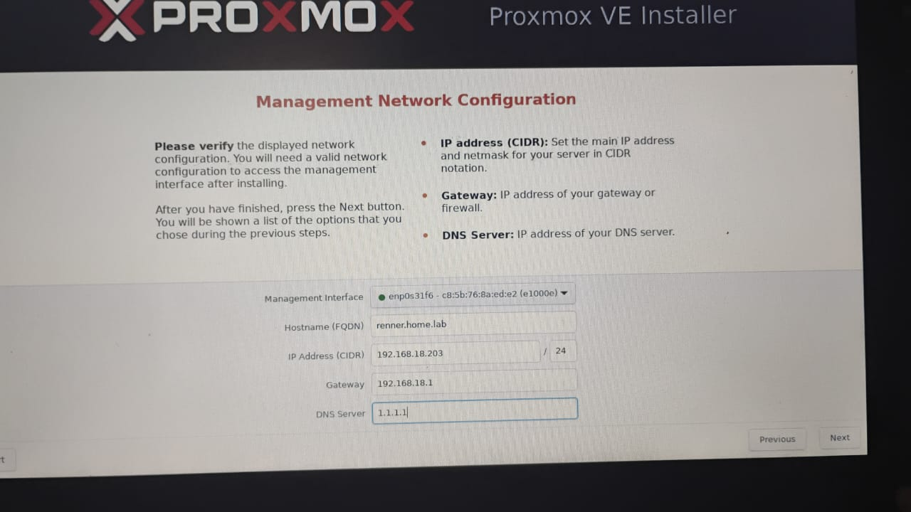
Dan juga…aku bisa mengakses :8006 untuk mengakses Proxmox via web UI dari PC-ku.
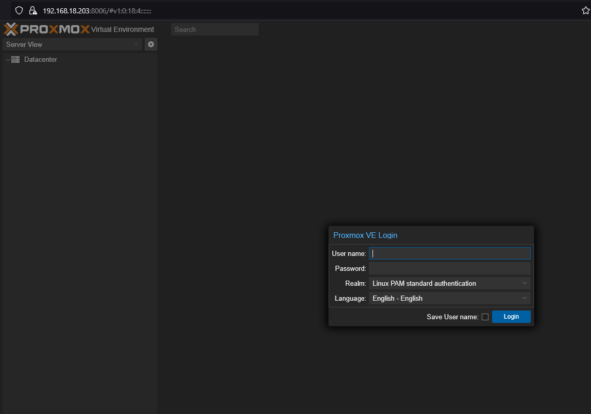
Biar lebih aman aku reserve juga static IP di pengaturan modem Wi-Fi-ku
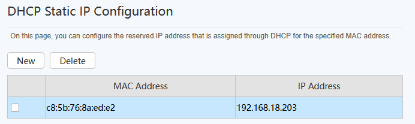
Mencegah Suspend saat Lid Ditutup
Saat ditutup, laptop biasanya akan masuk ke mode sleep/suspend. Aku ingin supaya RENNER tidak masuk mode itu ketika aku menutupnya. Oleh karena itu aku mengubah konfigurasi di /etc/systemd/logind.conf.
Aku mengubah line yang kelihatan seperti ini
#HandleLidSwitch=suspend
dan ini
#HandleLidSwitchDocked=ignore
menjadi
HandleLidSwitch=ignore
dan
HandleLidSwitchDocked=ignore
Perhatikan tanda pagarnya. Hasilnya bakal seperti ini
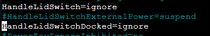
Setelah itu aku perlu save file-nya dan juga restart systemd
systemctl restart systemd-logind.service
Setelah kucoba…it works🥳. Oh ya aku ketemu tutorialnya di sini
Mematikan layar
Aku tidak mau jika layarku menyala 24/7 karena akan membuat RENNER jadi kepanasan. Jadi aku coba mencari cara mematikan layarnya. Ternyata di video yang sama juga dijelaskan. Aku perlu mengedit file dengan
nano /etc/default/grub
lalu ubah line ini
GRUB_CMDLINE_LINUX=""
jadi
GRUB_CMDLINE_LINUX="consoleblank=60"
Angka di situ menunjukkan berapa detik layar akan mati setelah tidak ada aktivitas. Enam puluh berarti layarku akan mati setelah 60 detik (1 menit tanpa aktivitas). Setelah itu, untuk mengimplementasikan perubahan, aku jalankan
update-grub
Koneksi Harddisk
Aku punya harddisk 1 TB yang rencananya akan kugunakan untuk NAS dan juga menyimpan film serta musik. Pada saat kuhubungkan pertama kali, Proxmox belum mendeteksi adanya harddisk itu. Tetapi setelah aku melakukan reboot harddisk itu dikenali sebagai /dev/sdb
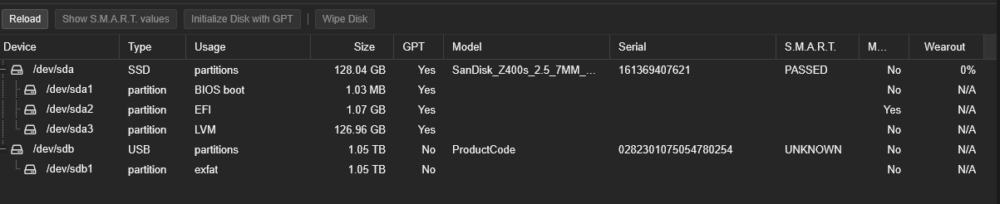
Aku menemukan jawaban dari Reddit tentang cara untuk memformat harddisk-ku.
fdisk -l dulu untuk melihat disk-nya. Ternyata harddisk-ku ada di /dev/sdb. Trus aku jalanin
fdisk /dev/sdb, habis itu pas CLI-nya berubah aku ketik d, Enter, habis itu w, Enter. Pas aku klik d lalu Enter, itu bakal menghapus partisi di harddisk-ku. Pas aku ketik w itu berarti bakal write changes ke harddisk-ku Kebetulan cuma ada 1 jadi aku perlu jalanin sekali. Habis itu aku ngelihat disk-nya lagi, betul deh, partisinya hilang. Sekarang saatnya buat partisi baru.
fdisk /dev/sdb
g, ini bakal ngebuat partisi baru
w
Oke sampai sini. Aku baru sadar ternyata ada GUI-nya…
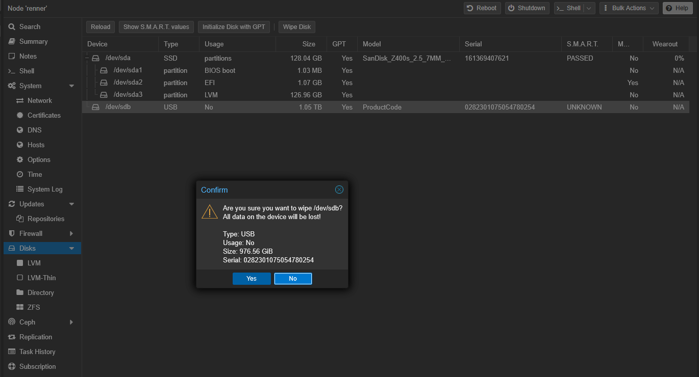
Moving on, aku mau buat jadi beberapa partisi yaitu
- 300GB untuk film-film
- …dan sisanya aku belum tahu😬
Kita masih bakal pakai fdisk karena aku ketemu website buat tutorialnya.
Masalahnya pas aku langsung masukkin n aku dapet prompt ini
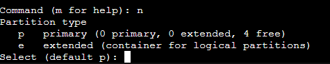
Aku gak tahu bedanya primary sama extended, jadi aku perlu Googling lagi. Untung langsung nemu dan sat-set sat-set, aku langsung pilih primary, start 2048, last sector +300GB, abis itu langsung w. DONE.
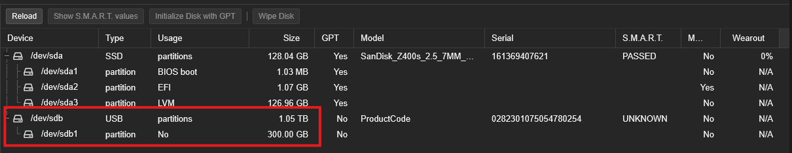
Syncthing
Setup Syncthing jadi prioritasku biar aku bisa sinkronkan PKMS (Personal Knowledge Management System)-ku antara PC, laptop, dan ponsel. Aku kepikirannya pakai container aja soalnya aku cuma jalanin 1 aplikasi dulu. Aku perlu cari cara buat container di Proxmox. Aku ketemu video ini yang pake Docker.
- Aku perlu download template untuk container-nya, aku pilih Ubuntu karena…aku lebih suka aja. Sekarang kita menunggu lagi.
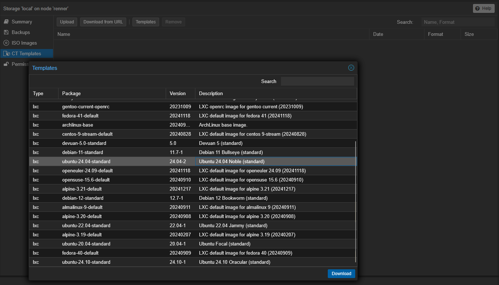
DONE
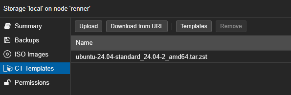
- Sekarang aku perlu klik Create CT
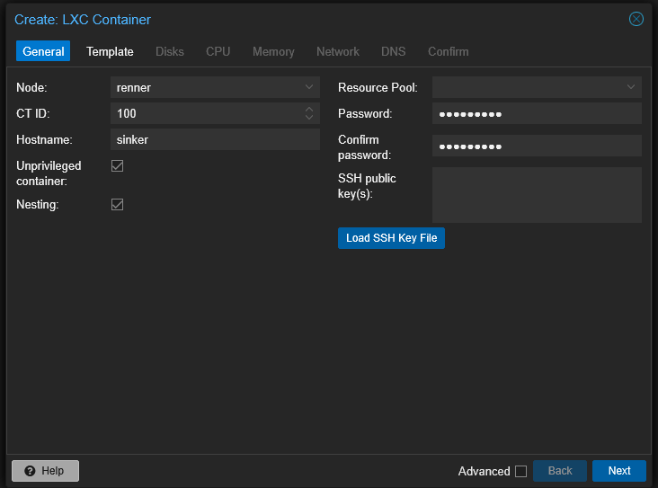
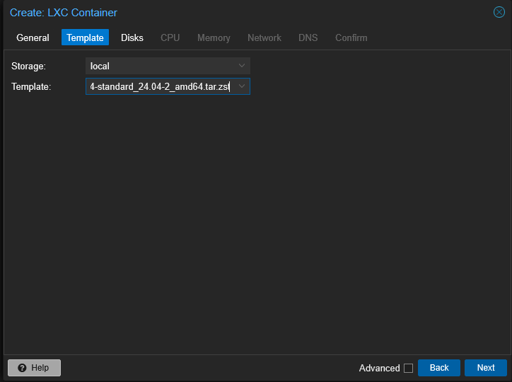
Buat disk aku pilih SSD aja karena PKMS harusnya engga ngabisin banyak tempat. Aku alokasiin 8 GB biar lega (kelegaan malah).
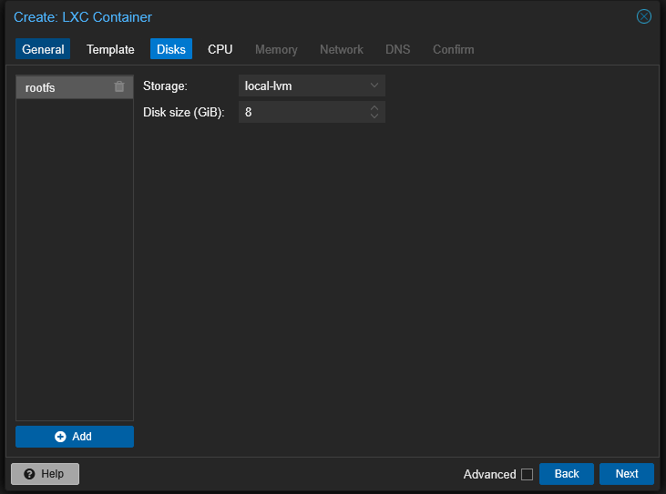
Aku set 1 core aja buat CPU
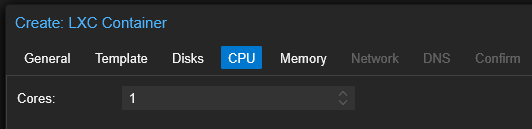
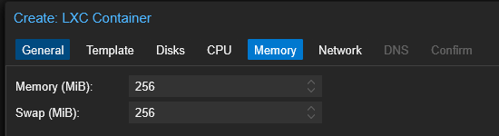
Ini konfigurasi buat network-nya dan aku biarin aja sih
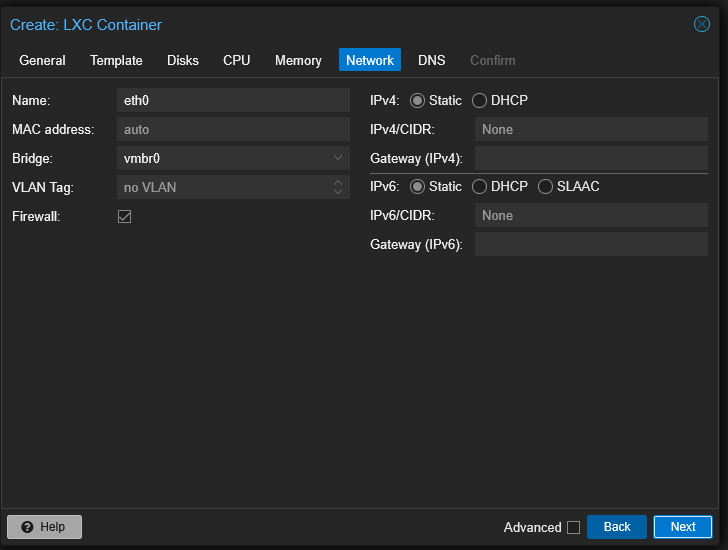
Dan di akhir, aku dikasi summary dari CT yang mau aku buat.
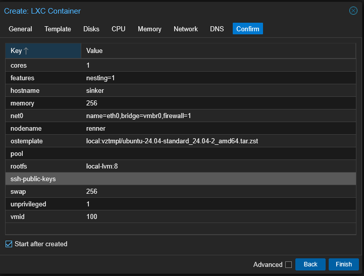
- Setelah itu aku perlu install Docker di CT yang baru kubuat, aku baru aja berhasil login
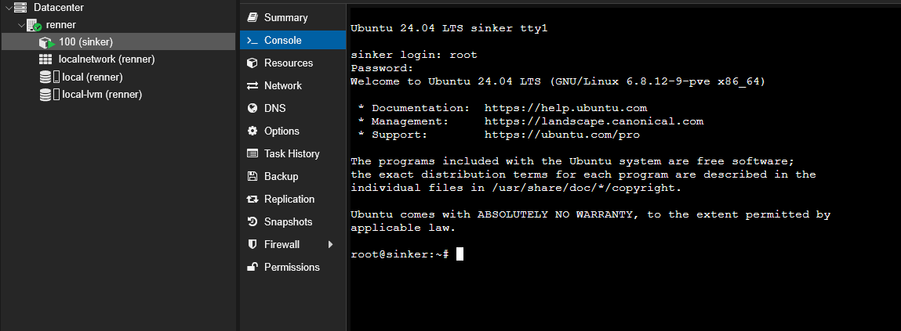
Abis itu di tutorial-nya nyaranin buat update dan upgrade. Buat kalian yang belum tahu, update itu bakal download informasi dari update-annya (versi berapa yang baru) dan upgrade itu baru yang bakal mengaplikasikan update yang rilis itu
apt-get update && apt-get upgrade. Engga perlu sudo di depan karena kita udah root.
Habis itu kita install curl, apt install curl -y. Dan setelah tinkering beberapa saat kita dapat masalah
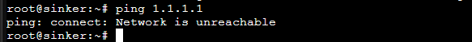
KAGAK BISA CONNECT INTERNET!!!
Aku coba edit dengan nambahin IP address
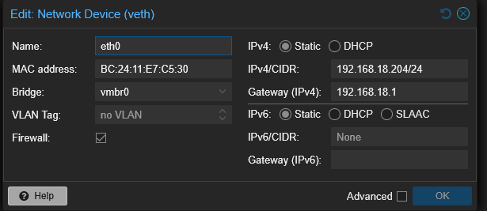
Mantap betul👍
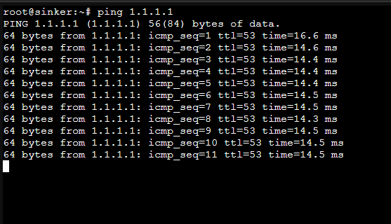
Kalau kata temenku ini namanya FAFO, which stands for F*ck Around and Figure Out.
Sekarang kita back to the previous step, get update, upgrade, dan sekarang kita tambahin --fix-missing.
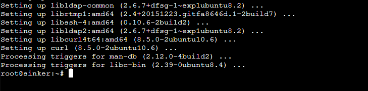
DONE
trus kita run command ini
curl -sSL https://get.docker.com | sh
Aku engga ngerti apa artinya flag -sSL…aku coba cari di Explain Shell dan ini jawabannya
Dan setelah menunggu (lagi). Docker sudah terpasang
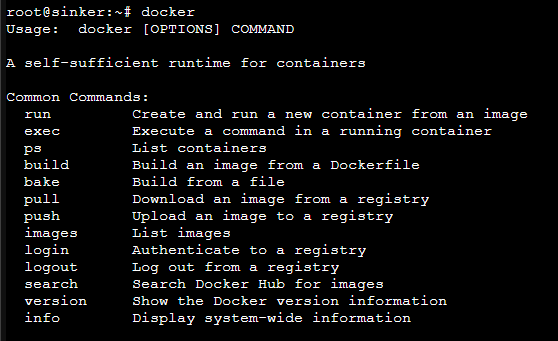
- Instal Syncthing di Docker-nya. Ini sebenernya udah malem pas aku nulis ini dan sekarang aku gmw ribet😫😫😫, jadi langsung aja aku run ini
docker run -d \
--name=syncthing \
--hostname=sinker #optional\
-e PUID=1000 \
-e PGID=1000 \
-e TZ=Etc/UTC \
-p 8384:8384 \
-p 22000:22000/tcp \
-p 22000:22000/udp \
-p 21027:21027/udp \
-v /path/to/syncthing/config:/config \
-v /path/to/data1:/data1 \
-v /path/to/data2:/data2 \
--restart unless-stopped \
lscr.io/linuxserver/syncthing:latest
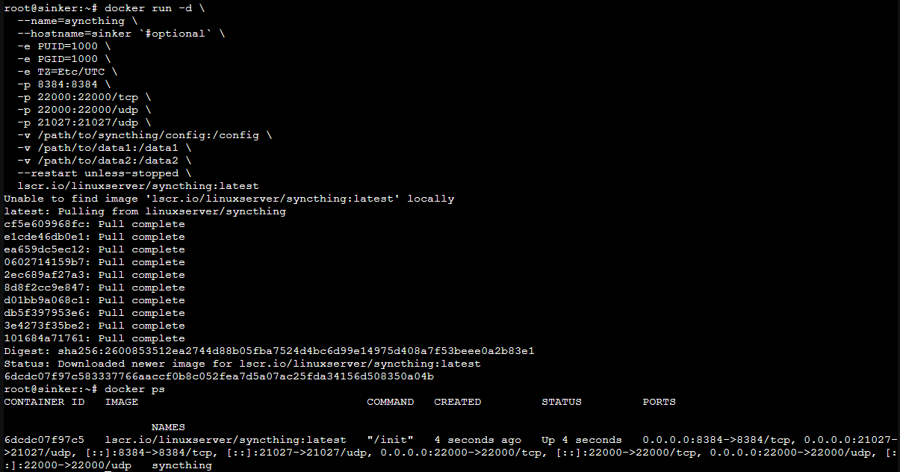
Okeh maknyus, sudah jalan. Sekarang aku mau coba SSH, tapi ternyata kena tolak terus padahal sshd jalan, password dah betul juga. Ternyata aku perlu edit /etc/ssh/sshd_config trus ubah #PermitRootLogin prohibit-password jadi PermitRootLogin yes dan voila!
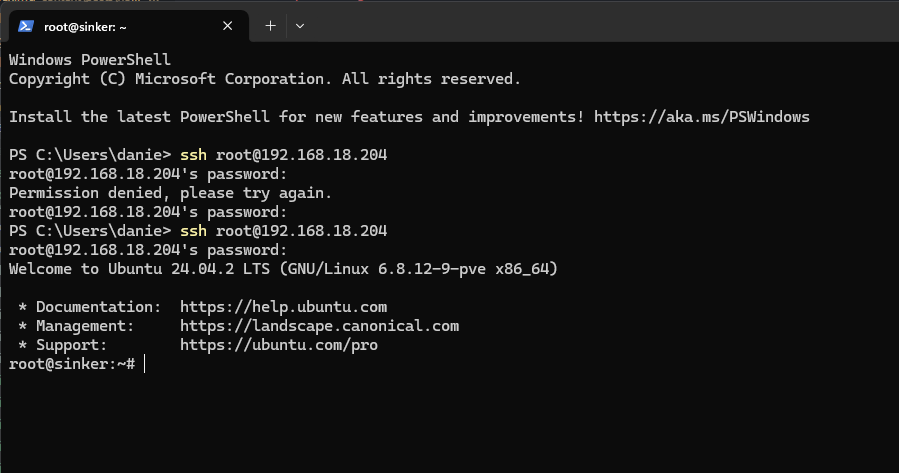
Sekarang aku bisa melakukan SSH Tunneling
ssh -L 6065:localhost:8384 root@192.168.18.204
dan…
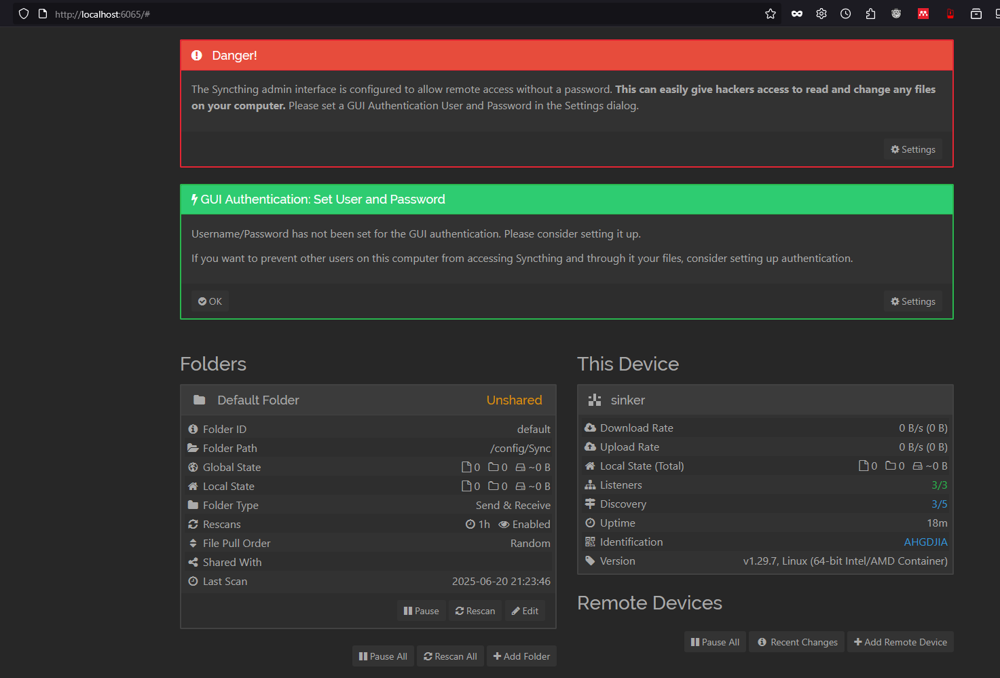
Keren bat guwa mah😎
sekarang saatnya buat folder baru, trus tinggal hubungin deh via GUI.
- Setting folder dan GUI
Oke kalau soal GUI tinggal teken-teken aja lah ya, sekarang aku dapet masalah yang menarik.
Aku udah buat folder dengan path dan permission seperti ini
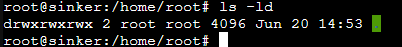
Tapi masalahnya, aku dapet error message ini terus
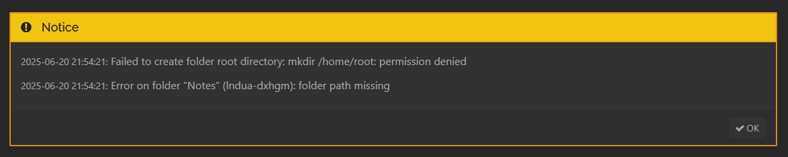
Setelah 2 kali mencoba aku sadar, “Iya juga ya, kan syncthing-nya jalan di Docker”. Kurang pintar saya memang, namanya juga belajar.✌️✌️✌️🕊️🕊️🕊️
Daripada kesulitan mending aku langsung install Syncthing-nya di Ubuntu, kagak usah pake acara Docker-Dockeran segala.
Stop dulu deh Docker-nya
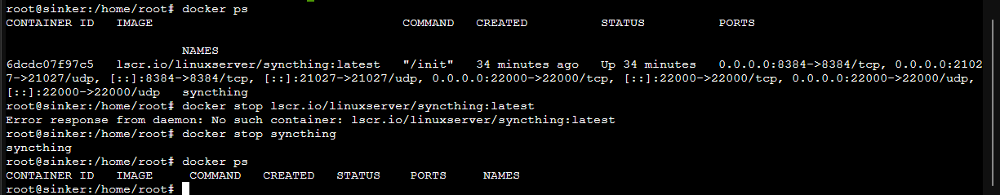
Abis itu install syncthing versi normal
- Aku tinggal ikutin dokumentasi dari APT buat install syncthing.
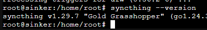
Mantap, udah terinstall. Sekarang saatnya ngetes.
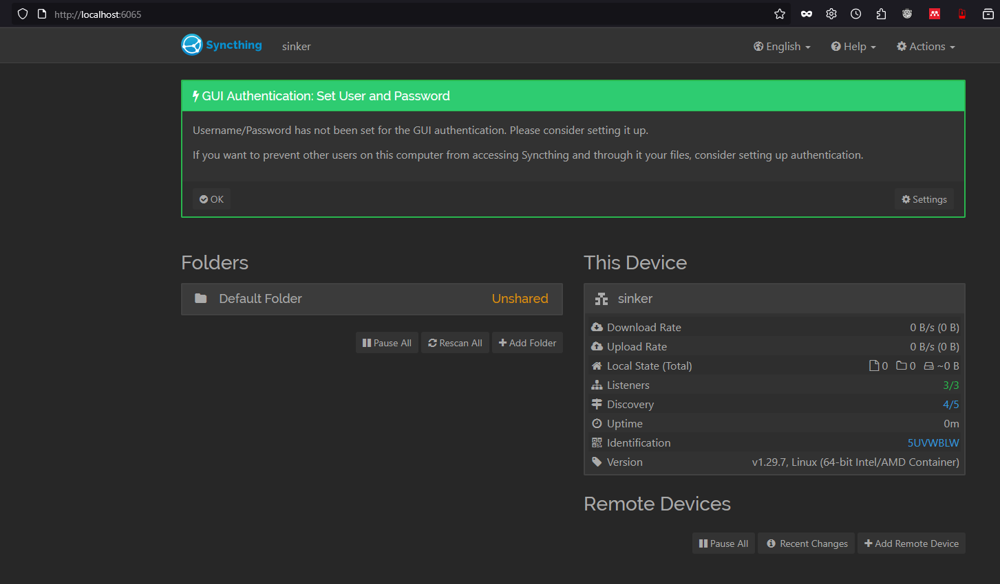
OK, GUI sudah bisa diakses via SSH Tunnelling. Sekarang saatnya klik-klik lagi. Eits tapi sebelum itu aku mau install tmux supaya Syncthing bisa jalan di-“background” (sort of). Aku pakai apt-get install dan aku ikutin aja tutorial dari sini
Dan taraaa
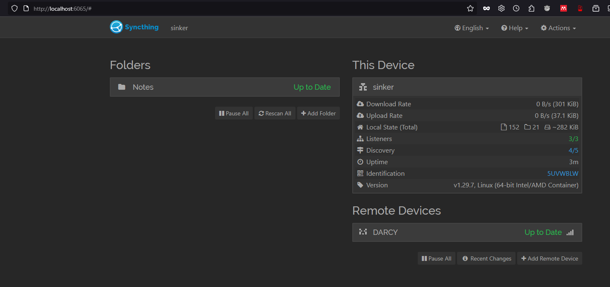
Kurang lebih ini gambaran buat sinkronisasi file-nya
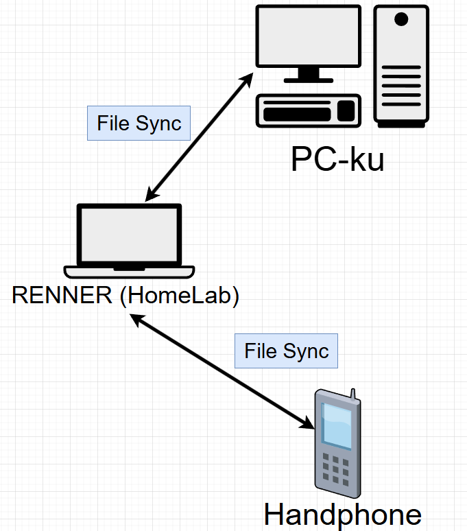
RENNER aku jadiin episentrum untuk menyimpan file yang baru. Semisal aku edit di HP dan PC-ku mati, file-nya bakal ke-save di RENNER, dan aku bisa fetch dari PC-ku ketika kunyalakan. Begitu juga sebaliknya.
Fyuh panjang juga ya postingan ini. Thank you yang udah baca sampai abis dan nyimak aku nge-FAFO. Aku rencananya bakal maintain dan ngasi tahu kalau ada update dari homelab-ku ini. Hehe, ciao.